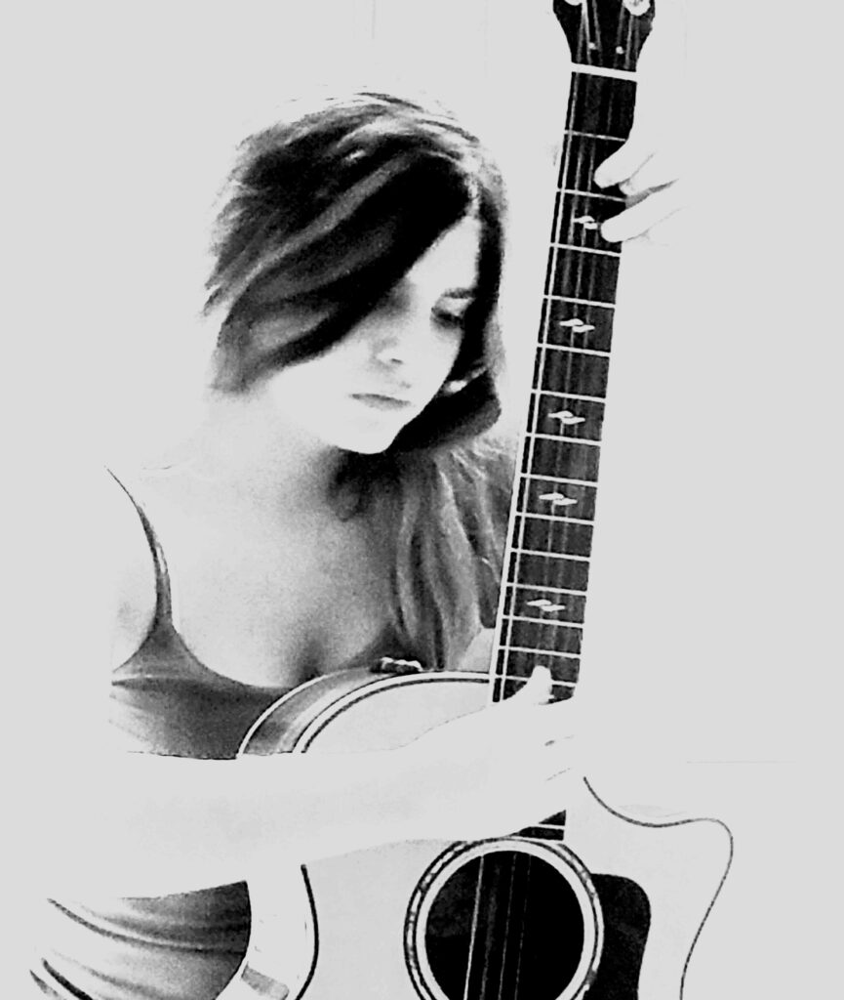
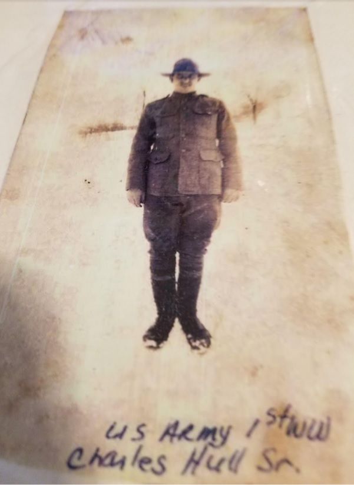
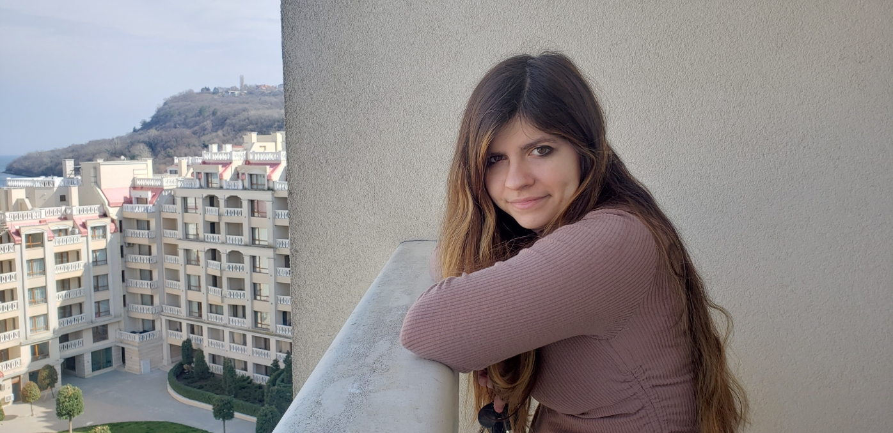

Est. 2015
Publishing Label of
Singer-Songwriter-Musician Zelena Hull

About Us
This is the in house label for Independent musician Zelena Hull. Our catalog currently contains her works which are country, Americana, rock, pop, electronic, and many more. Edward Hull (CEO) and Zelena Hull (artist and marketing strategist) currently direct this record label and publishing company.
We have worked with many different musicians and producers in recording her tracks and voice. Some of the amazing talent we have had the honor of creating with are: Mike Schrimpf (who has worked with Conway Twitty, Loretta Lynn, George Jones, and more), Mr. Steve Hinson (One of Nashville’s most requested players), Grammy players, and some members of the house band for the Grand Ole Opry. She has also worked with Katlin Owen who is the guitarist for country music singer RaeLynn.
Music runs in the family. Our history involves Zelena’s great grandmother being among the earliest alumni of The Julliard School of Music. Zelena’s Great grandfather Edward Wicks was a luthier who restored the infamous violin belonging to Joshua Bell. Zelena’s father Edward said he remembers his grandfather showing him a violin he rebuilt in the mid 1980’s and playing it very briefly to show him how beautiful it sounded. He would not let him play it and was careful with it. It may be the same violin. On 28 February 1936 the violin was stolen from Bronisław Huberman while playing at Carnegie Hall by a young musician named Julian Altman. Altman asked his grandfather to rebuild the violin and later on his deathbed confessed that he had stolen it from Huberman. It was later turned over to the Lloyd’s of London who had paid $30,000 on the claim after the theft. The violin was sold to British violinist Norbert Brainin for $1.2 million. He later sold it to Joshua Bell for $4 million. The violin can be heard in soundtracks in the movie ‘The Da Vinci Code ‘, the movie ‘Angels and Demons’, and ‘The Red Violin’. The violin is now named ‘Gibson ex Huberman‘ and is worth $14 million. You can hear the composition by Hans Zimmer and Joshua Bell on Youtube.
Family History
Edward's (Zelena's father) maternal family history includes a Great Grand Father (William Wicks) who served on President Roosevelt’s wartime production board. He was one of the pioneers of the American Welding Society and helped pioneer the gas welding process. He developed several tools for gas welding. He trained welders at his welding school in New York for the Brooklyn Ship yards. There were approximately over 200,000 combat repairs by these welders and other staff. His sister in law Mary Wicks also is the sister of German Industrialist Robert Bosch. Robert Bosch at the same time was opposed to the war efforts by Hitler and is known for helping Jews escape. His humanitarian views and efforts are well known.

Women working in the Navy Ship yard.
William Wicks teaching for the Brooklyn ship yards.
Edwards paternal family includes his grandfather Charles Henry Hull who was born in 1903. During world war 1 he enlisted in the U.S. Army with the help of his sister who lied to recruiters and said he was 18 years old. He was 15 at the time of his enlistment.

Private Charles Henry Hull Sr. World War 1.
Charles married his second wife after the death of his first wife. In total he had 18 children. His son Leonard served in the Korean War. He was a member of the Service Company of the 34th Infantry Regiment, 24th Infantry Division and was taken as a prisoner of war on July 29th 1950. He remains in unknown status in present day. For forty years Charles would visit the American Red Cross every two weeks to ask them if they found his son.
Sergeant Leonard C Hull RA-12242197
Several of Charles children served in Korea and Vietnam. His son Clifford was featured in an article in the Augusta Chronicle in 2011. His distinguished service is remarkable. You can read more here and see a photo library here of Uncle Clifford’s service.
Edward’s wife Valerie is a fine artist and sculptor. In 2006 Valerie and Edward teamed up with locals in the community to fight an out of state waste landfill planned for their local community. They targeted a town that was within 5 miles of another mega landfill and had a significantly elderly citizenship. Valerie donated art that was used for a drawing. Funds from the drawing paid all legal fees and representation for the small town. They ran the internet campaign and met with lawmakers in the S.C. House of Representatives and educated the public to win their support. They and the others who fought are one of the only successful campaigns to stop the waste industry in the US. They have been married for over 25 years and had Zelena as their first and only child. Valerie helped Zelena develop her artistry and has been the catalyst in growing Zelena’s talent. Little known to most people, Zelena also has the gift of artistic abilities from her mother. You can see more of Valerie’s work at Valeriehull.com
Jesus sculpted by Valerie Hull
Mary and Jesus sculpted by Valerie Hull
About Zelena Hull

Zelena Hull is a singer-songwriter-musician who started her journey at 11 right after she was diagnosed with Autism. She first started with vocal lessons and singing competitions. Zelena won multiple awards and competitions including Best Singer in the District. Soon after she started practicing the guitar with the help of Dan Caston. Two months after she started playing the guitar, she wrote her first song “Serious.” Soon after more songs came down the pipeline. She then came out with her album “6ft Under” and Christmas single “I believe.” They were recorded in Nashville by KLP records and by South Eastern Sound Studio. Zelena then was invited to judge Best Singer in the State when she was only 16 and is still the youngest judge to date. After numerous gigs, she then released the Eps “In love with you” in 2019, “Just a Cinderella Story” in 2020, and “Hello” on March 20th 2022. As of now, she has written a total of 1000 songs. She continually strives to create more. Check out Youtube and website zelenahull.com for the latest. She is currently working on the world record for the most consectively released songs with around 80+ releases.